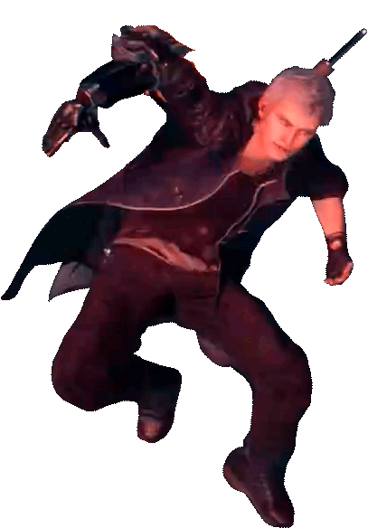

Nero
Ele é um orfão criado pela ordem,na cidade de Fortuna. Após combater Dante durante um rápido encontro,Nero teve a ingrata tarefa de persegui-lo,após Dante ter assassinado Sanctus.
Dante
Como visto no início da série, Dante é incrivelmente irreverente, falando casualmente até mesmo para o mais poderoso dos demônios, e geralmente gosta de se exibir e provocar seus adversários sempre que pode. Dante também exibe uma atitude destemida, quase desinteressada em relação a situações incrivelmente perigosas, como assumir que Trish simplesmente teve que usar o banheiro depois de bater pela porta da frente de seu escritório em uma motocicleta, ser atacado pelos 7 Infernos em seu escritório, ser engolido por Echidna , e encolher os ombros sem esforço de ferimentos como um tiro na cabeça ou empalamento várias vezes, o último dos quais acontece com bastante frequência para o Devil Hunter.
Nico
Nicoletta Goldstein, mais conhecida como Nico, é uma artesã especialista e personagem coadjuvante em Devil May Cry 5. Ela é associada do ramo de negócios de Devil May Cry de Nero, bem como a mente por trás das várias próteses cibernéticas que ele usa para caçar demônios depois que o Devil Bringer foi decepado de seu braço.
V
V é um dos principais protagonistas e o terceiro personagem jogável introduzido em Devil May Cry 5. Um humano com laços demoníacos, V se apresenta como o novo cliente de Dante para colocá-lo no rastro de Urizen e leva Nero como seguro reserva. É revelado mais tarde que V é, na verdade, a metade humana de Vergil.
Vergil
Vergil é filho do demônio Sparda e da humana Eva, o irmão gêmeo mais velho de Dante e pai de Nero. Ele é um dos personagens principais da série Devil May Cry, apresentado no primeiro jogo como o antagonista secundário, um dos principais antagonistas de Devil May Cry 3: Dante's Awakening e o antagonista final em Devil May Cry 5. Além de sendo um chefe em jogos, ele se torna jogável nas edições especiais de Devil May Cry 3, 4 e 5.
Trish
Trish conhecida como A Encantadora Infernal (The Bewitching Devil, 麗しき悪魔, Uruhashiki Akuma) é uma demônio criada por Mundus que estranhamente se parece com a mãe de Dante, Eva. Após sua derrota pelas mãos de Dante, ela mais tarde se juntou a Devil May Cry e se tornou uma caçadora de demônios ao lado dele. Durante sua passagem pela Ordem da Espada, ela estava disfarçada de "Gloria". Ela é uma personagem principal da série, embora originalmente tenha começado como uma das inimigas de Dante. Trish aparece como personagem jogável em Devil May Cry 2 e Devil May Cry 4: Special Edition, ela também está presente em Devil May Cry, Devil May Cry 4 e Devil May Cry 5, e também na série de Anime.
Lady
Lady é uma Caçadora de Demônios humana que apareceu pela primeira vez em Devil May Cry 3: Dante's Awakening como personagem coadjuvante e chefe. Ela é filha de Arkham e procurou caçá-lo, encontrando Dante no processo. Após os eventos de Devil May Cry 3, ela se junta a Devil May Cry. Ela também aparece como um personagem jogável em Devil May Cry 4 e aparece novamente como personagem coadjuvante em Devil May Cry 5. Embora seu nome preferido, "Lady", tenha sido dado a ela por Dante, seu nome de nascimento é Mary Ann Arkham.
Marionette
Esses são os bixos que você ira encontrar durante o jogo, eles aprentemente não são difícies mas podem dar muito trabalho cuidado uns te predem como uma mariote.
Pecados
Esses bixos lembram a morte do devil may cry 3. Esses bixos são irritantes nunca ataque eles nas mãos o nos pés, mas sim na cabeça.
Sombra
Com uma aparência semelhante à da família dos gatos, as Sombras podem mover-se incrivelmente depressa e atacar os seus oponentes. No entanto, o seu arsenal de armas é mais vasto. Algumas vezes mudam a forma do seu corpo drasticamente, para exterminar a presa. De facto, eles são um espiritos que não possuem forma e sem substância. Eles entram no mundo humano "embrulhando" os seus espiritos com magia negra. Ataques de espada não irão resultar com este inimigo poderoso, mas balas irão.
Lâmina
Com uma aparência semelhante à da família dos gatos, as Sombras podem mover-se incrivelmente depressa e atacar os seus oponentes. No entanto, o seu arsenal de armas é mais vasto. Algumas vezes mudam a forma do seu corpo drasticamente, para exterminar a presa. De facto, eles são um espiritos que não possuem forma e sem substância. Eles entram no mundo humano "embrulhando" os seus espiritos com magia negra. Ataques de espada não irão resultar com este inimigo poderoso, mas balas irão.
Nimguêm
Esses bixos não tem nome e não são inteligentes, mas arrancam o poder dosa demonios eles são fracos contra espadadas.
Fetiche
Esses bixos não tem nome e não são inteligentes, mas arrancam o poder dosa demonios eles são fracos contra espadadas.
Sargasso
Esses bixos vem das profundezas das trevas são bixos muito faceis de matar pois seus ataques são as mordidas.
Plasma
Esses bixos tem a habilidade de se transformar em morcego, em um ciclope ou imitar seu oponente, matar todos de uma vez só é mais facíl.
Gelados
Esses bixos tem a habilidade de se transformar em morcego, em um ciclope ou imitar seu oponente, matar todos de uma vez só é mais facíl.
Beezlebub
Esses bixos são demonios que tem forms de insetos, são muito faceis é só você usar a Shotgun para mata-los.
Kyklops
Esses bixos são demonios que tem forms de insetos, são muito faceis é só você usar a Shotgun para mata-los.